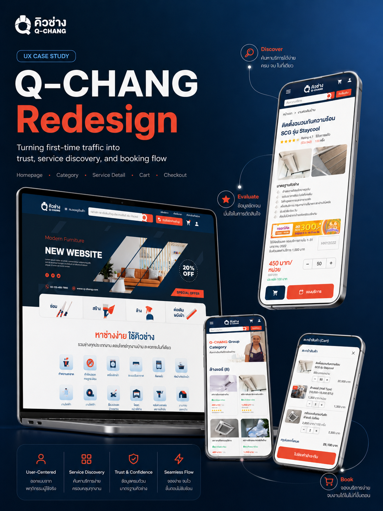

01 / CUSTOMER EXPERIENCE
Q-CHANG Web
จากค้นหาบริการ ถึงจองและกลับมาใช้ซ้ำ
ปรับเว็บไซต์ฝั่งลูกค้า ตั้งแต่ทางเข้าหมวดบริการ รายละเอียด ตะกร้า และการจอง โดยใช้ฟีดแบ็กทดสอบกับข้อมูลธุรกรรมทบทวนการออกแบบ
- Role
- UX/UI Design
- Scope
- Homepage → Category → PDP → Booking
- Collaboration
- รีวิวและทดสอบร่วมกับ PO และทีม
- Evidence
- Usability test + Transaction insight

ภาพรวมการออกแบบ Q-CHANG — artwork ที่ใช้สื่อขอบเขตงาน
01 / CUSTOMER EXPERIENCE
เลือกทางเข้าจากสิ่งที่อยากทำ
ได้รับเว็บไซต์เดิมมาปรับในช่วงที่แบรนด์และระบบหลังบ้านกำลังเปลี่ยน ปัญหาแรกคือหมวดบริการจำนวนมากที่ลูกค้าแยกและค้นหาได้ยาก จึงเริ่มจากคำที่ครอบคลุมบริการย่อย แต่เฉพาะพอให้คนรู้ว่าความต้องการของตนอยู่กลุ่มไหน
หลังคาจึงมีทางเข้าต่างกันตามสิ่งที่ลูกค้าต้องการทำ: ซ่อมหลังคาที่รั่ว หรือทำหลังคาต่อเติม แนวทางนี้ให้ผู้ใช้เลือกความต้องการ ก่อนลงไปเลือกรายการบริการเฉพาะ
แผงด้านบนเป็นภาพอธิบายหลักการจัดหมวด ไม่ใช่ภาพหน้าจอผลิตภัณฑ์
02 / CUSTOMER EXPERIENCE
หาบริการเจอแล้ว แต่โปรโมชั่นอยู่ไหน?
นำแบบไปรีวิวกับ PO และทีม แล้วร่วมทดสอบกับผู้เข้าร่วมประมาณ 10–12 คน ผ่านคนรู้จักและการแนะนำต่อ เริ่มจากให้สำรวจโดยไม่ชี้นำ แล้วจึงให้โจทย์ เช่น หลังคามีน้ำหยดหรือแอร์สกปรก
ไม่พบจุดติดขัดในการใช้แท็บหมวดบริการตามโจทย์ที่ให้ แต่มีคำถามว่า “โปรโมชั่นอยู่ไหน?” จึงปรับทั้งทางเข้าและพื้นที่สื่อสารโปรโมชั่น
- เพิ่มปุ่มรวมโปรโมชั่นไว้ด้านบน
- ขยายความสูงของ Hero section
- เพิ่ม CTA บนแบนเนอร์ให้มีทางไปต่อชัดเจน
ในการลองหลังปรับ ไม่พบคำถามเรื่องตำแหน่งโปรโมชั่นแบบเดิม ผู้เข้าร่วมเริ่มเลื่อนสำรวจส่วนต่าง ๆ และมีความเห็นว่าหน้านี้ตอบโจทย์เมื่อมีเรื่องเกี่ยวกับบ้าน
เป็นข้อสังเกตเชิงคุณภาพจากกลุ่มทดสอบ ไม่ใช่ผลวัด conversion และยังแยกผลของการปรับแต่ละส่วนออกจากกันไม่ได้
03 / CUSTOMER EXPERIENCE
บริการเดียว เลือกตัวเลือกในจุดเดียว
เดิมบริการเดียวกันถูกแยกเป็นหลายรายการตามขนาดและราคา ตั้งสมมติฐานว่าการอ่านรายการที่คล้ายกันจำนวนมากอาจทำให้ลูกค้าล้า จึงรวมตัวเลือกไว้ในหน้ารายละเอียดบริการเดียว เช่น ขนาด BTU กับราคาของบริการล้างแอร์
| โครงสร้าง | วิธีเลือกบริการ |
|---|---|
| ก่อน | บริการเดียว หลายขนาด หลายรายการ |
| หลัง | หน้าบริการเดียว เลือกขนาดและดูราคาภายในหน้า |
ใช้ความคุ้นเคยจาก E-commerce เช่น การเลือกสีและขนาดรองเท้าในหน้าเดียวเป็นแนวทาง การลองใช้งานผ่านไปได้ด้วยดีตามที่สังเกต แต่ไม่มีตัวเลขเปรียบเทียบเวลาและความผิดพลาดก่อน–หลัง
04 / CUSTOMER EXPERIENCE
ความสะดวก ต้องมีเหตุให้ใช้ด้วย
ตะกร้ารวมตามมาในช่วงท้าย เพราะกระทบระบบหลังบ้านหลายส่วน สมมติฐานคือช่วยลูกค้าที่ต้องการซื้อหลายบริการ ผู้เข้าร่วมสัมภาษณ์ให้ความเห็นว่าสะดวก
หลังเปิดใช้ ข้อมูลธุรกรรมที่ทีมตรวจพบว่าลูกค้าส่วนใหญ่ทำรายการบริการเดียว และมีการซื้อข้ามบริการร่วมกันน้อย เช่น ล้างแอร์พร้อมทำความสะอาด
ความเห็นว่า “สะดวก” ยังไม่ได้บอกว่าลูกค้าจะมีเหตุให้ใช้ฟีเจอร์นั้นบ่อยเพียงใด
ทีมคงตะกร้าไว้ แล้วพัฒนาส่วนที่รองรับลูกค้าเดิมต่อ โดยไม่สรุปว่าตะกร้าไม่มีประโยชน์หรือทำให้ยอดขายเปลี่ยนเท่าใด
05 / CUSTOMER EXPERIENCE
ช่วยลูกค้าเดิมลดการกรอกซ้ำ
ข้อมูลธุรกรรมมีเบอร์โทรเดิมปรากฏซ้ำในหลายรายการ เป็นสัญญาณของการกลับมาจอง จึงเพิ่มที่อยู่ที่บันทึกไว้ ที่อยู่ที่ใช้ล่าสุด และข้อมูลบัญชีผู้ใช้
การจองยังต้องมีเบอร์ที่ติดต่อลูกค้าได้ตามนโยบายบริการ เมื่อเลือกที่อยู่ ระบบนำเบอร์ที่ผูกกับที่อยู่นั้นขึ้นมาให้อัตโนมัติ และลูกค้าแก้ก่อนยืนยันได้
รับผิดชอบ UX/UI ตลอดเส้นทางฝั่งลูกค้า และร่วมรีวิว/ทดสอบกับทีม ผลต่ออัตราจองซ้ำหรือระยะเวลาจองยังไม่มีตัวเลขสำหรับอ้างในเคสนี้